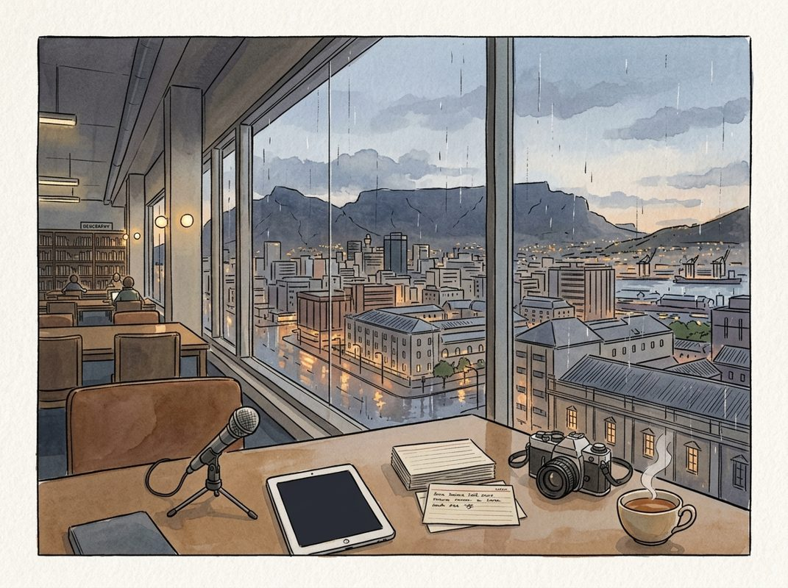

8/31

播客简报 2026-08-31
今日更新
#431 How Henry Singleton Worked
来源：Founders
原链接：
状态：已读完整音频 transcript
本期播客深入剖析了亨利·辛格尔顿（Henry Singleton）这位被查理·芒格誉为“我所见过最聪明的人”的传奇CEO，揭示了他如何通过独特的资本配置、极致的去中心化管理和反传统策略，在近30年间为投资者创造了高达20.4%的年复合回报，是所有追求卓越商业实践和独立思考的投资者及企业领导者的必读材料。
- 非凡背景与Teledyne的创立：数字时代的先驱：亨利·辛格尔顿拥有与众不同的背景，他不仅是世界级的数学家，曾为麻省理工学院编写首台计算机，并在二战中开发雷达规避技术，还创造了至今仍在军用和商用飞机中使用的导航系统。在1960年代初，43岁的辛格尔顿与乔治·罗伯茨共同创立了Teledyne，初始资本45万美元。他坚信数字技术和半导体将引领未来，并以此为基础，通过一系列有选择的收购，将Teledyne打造成一个多元化的企业集团。辛格尔顿的目标是创建一个像通用电气（GE）一样强大且不断自我演进的企业，而非仅仅复制Litton Industries。
- 资本配置：CEO的首要职责：沃伦·巴菲特曾指出，大多数CEO专注于运营管理，却不擅长资本配置。辛格尔顿则将资本配置视为CEO最重要的工作，并投入了大部分精力。他认为，长期价值的衡量标准是每股价值的增长，而非整体规模或营收。他强调现金流而非账面利润，并设计了独特的“Teledyne回报”指标（现金流与净利润的平均值）作为业务单元经理奖金的依据，以激励现金生成。这种对资本配置的执着和对核心指标的重新定义，是Teledyne成功的基石。
- 极致去中心化与独立思考：辛格尔顿推崇极端的去中心化管理模式，总部员工不足50人，公司总员工超过4万人，甚至没有人力资源或投资者关系部门。他将运营责任和权力下放给各个业务单元的总经理，鼓励他们像企业家一样运作。他相信独立思考对长期成功至关重要，并认为与外界（如分析师和记者）的互动是时间和精力的浪费。这种模式不仅释放了创业活力，也有效控制了成本，使得Teledyne在1978年拥有130个业务单元，其中129个盈利，展现了惊人的效率和适应性。
- 反传统的大规模股票回购：在1970年代初，股票回购被华尔街视为公司缺乏投资机会的弱点信号。然而，辛格尔顿却反其道而行之，从1972年开始，在接下来的12年里，通过八次要约收购，回购了Teledyne高达90%的流通股。查理·芒格称他为“回购界的贝比·鲁斯”。辛格尔顿坚信，当公司股价被低估时，回购自身股票是最好的投资机会，能为股东带来卓越的回报。事实证明，他的这一大胆举措为Teledyne股东带来了高达42%的年复合回报，远超同期市场表现。
- 灵活的战略调整与集中投资：辛格尔顿的策略并非一成不变，而是根据市场条件灵活调整。在1960年代，Teledyne通过大量收购实现增长。但到1969年，随着公司市盈率下降和收购价格上涨，他果断停止了收购，甚至解散了收购团队。此后，公司再未进行重大收购，也未发行新股。他将注意力转向现有业务的优化和现金流生成。在1970年代中期，他还利用保险子公司的资金，在熊市中集中投资于少数几家他深入了解且市盈率极低的上市公司，其中25%的资金投向了前雇主Litton Industries，展现了其高度集中的投资风格。
How to Accelerate Learning & Improve Education | Joe Liemandt
来源：Huberman Lab
原链接：https://www.hubermanlab.com/episode/how-to-accelerate-learning-and-improve-education-joe-liemandt
状态：未读全文：需要音频转写
材料不足：这期需要 transcript 或更完整正文后再做全篇摘要。
- 当前只有节目简介或网页正文；这是播客音频，必须获取 transcript 后才算读完整期。
Top White House Advisor: The US Empire Is DYING And Socialism Is Coming Next! | David Friedberg
来源：Diary of a CEO
原链接：
状态：已读部分音频 transcript
本期播客深入探讨了美国经济和社会面临的深层危机，包括贫富差距、政府过度干预导致的成本飙升，以及社会主义的“必然性”。嘉宾戴维·弗里德伯格（David Friedberg）以其独特的硅谷创业者和政府顾问视角，剖析了这些问题的根源，并强调了个人能动性和AI在未来发展中的关键作用。这期节目适合所有关注美国经济走向、科技发展对社会影响，以及对资本主义与社会主义辩论感兴趣的中文读者。
- 戴维·弗里德伯格：从硅谷到白宫的跨界思考者：戴维·弗里德伯格是一位对世界充满好奇的连续创业者和投资者，他坚信人类的能动性能够改变世界。他的职业生涯始于数学和物理学，在互联网泡沫时期投身硅谷，曾在谷歌早期任职。随后，他创立了气候公司（The Climate Corporation），并于2013年以超过10亿美元的价格出售给拜耳（Bayer），其农业软件至今仍被广泛使用。近期，他被任命为特朗普总统科学技术顾问委员会（PCAST）成员，专注于AI等前沿科技政策。弗里德伯格的经历塑造了他对经济、科技和政府角色的独特见解，使其能够从多维度审视美国当前面临的挑战。
- 美国经济的深层危机：负担不起与贫富差距：弗里德伯格指出，美国正面临一场严重的“负担不起危机”。高达63%的美国人入不敷出，没有足够的储蓄应对紧急情况，而生活成本的上涨速度远超工资增长。这导致了巨大的财富不平等和社会阶层对立，加剧了“我们与他们”的危机感。他引用瑞·达利欧（Ray Dalio）的帝国周期理论，认为美国正处于衰落之中，其内部矛盾常常引发外部冲突。这种经济困境是理解美国未来政策走向和民众对AI等新技术的态度的关键背景。
- 政府干预的“巨大谎言”与社会主义的必然性：弗里德伯格认为，过去半个世纪美国政策中存在一个“巨大谎言”，即政府能够通过提供更多服务来拯救民众。然而，政府对教育、医疗和住房等市场的干预，反而导致这些服务的成本飙升。他以高等教育为例，指出联邦学生贷款项目无限制地向大学输送资金，导致大学行政人员数量激增（30年内增长6倍），学费也随之水涨船高，却没有市场力量来制约。这种模式最终使得更多人依赖政府，并不可避免地走向社会主义，因为政府成为了经济的主导力量。
- “劳动到资本”的美国梦与税收政策的扭曲：弗里德伯格重新定义了“美国梦”，认为它不仅仅是拥有一套房子，而是个人能够从“劳动”阶段（月光族）过渡到“资本”阶段（拥有资产并能靠其收益生活），从而获得财务自由和选择的权利。他批评当前的税收政策，指出劳动收入的税率高于资本收益，使得资本能够通过复利效应快速增长，而劳动者却难以积累财富。他主张对资本交易（如出售股票或以资产抵押贷款）征收与劳动收入相当的税，而非通过“财富税”来没收私人财产，因为后者违反了美国立国原则，并已被法国等国的经验证明会导致人才和资本外流。
- 政治短期主义与个人能动性的缺失：弗里德伯格认为，美国政治体系中的四年选举周期导致政客们为了连任而不断向选民承诺“免费福利”，从而加剧了政府开支和国家债务，最终引发通货膨胀。他批评职业政客的存在，主张实行任期限制，让那些真正以国家长远利益为重的人来服务。他强调，政府的理想角色是提供稳定的基础设施和法律框架，而非直接干预或成为雇主。他认为，当前社会普遍缺乏对个人能动性的教育和重视，人们习惯性地将问题归咎于政府，而非主动创造价值。
历史精选
Starbucks (with Howard Schultz)
来源：Acquired
原链接：https://www.acquired.fm/episodes/starbucks-with-howard-schultz
状态：已读网页 transcript
这期播客深入探讨了星巴克从一家西雅图小咖啡豆店成长为全球咖啡巨头的非凡历程，尤其聚焦于霍华德·舒尔茨（Howard Schultz）的远见、韧性以及他如何通过构建独特的“第三空间”文化和以人为本的员工福利，颠覆了传统零售业的商业模式。对于所有寻求理解品牌建设、文化塑造、高速扩张以及如何在逆境中坚持愿景的创业者和商业领袖来说，这都是一堂不可多得的深度案例课。
- 星巴克1.0：从咖啡豆到舒尔茨的初遇：星巴克最初由杰瑞·鲍德温、泽夫·西格尔和戈登·鲍克于1971年在西雅图派克市场创立，起初只销售咖啡豆，甚至早期使用的是Peet's咖啡豆。霍华德·舒尔茨在1982年以营销主管身份加入时，星巴克仅有三家门店，其愿景也仅限于扩张到波特兰。当时的美国咖啡市场充斥着速溶咖啡和低品质罗布斯塔豆，精品阿拉比卡咖啡市场微乎其微。舒尔茨在施乐公司（Xerox）的销售经历，让他学会了面对拒绝的韧性，以及对成功的强烈渴望，这些都为他日后在星巴克的创业之路奠定了基础。他从一开始就看到了超越咖啡豆销售的巨大潜力，尽管当时公司上下对此并无共识。
- 意大利之旅与“第三空间”的灵感爆发：1983年，舒尔茨的一次意大利米兰之行成为星巴克历史的转折点。他被意大利咖啡馆浓厚的社区氛围和浪漫体验深深震撼，意识到咖啡不仅仅是饮品，更是一种社交和情感连接的“第三空间”（介于家和工作场所之间）。他带着这份愿景回到西雅图，却遭到创始人杰瑞·鲍德温和戈登·鲍克的强烈反对，他们不愿涉足餐饮业。经过两年多的坚持，舒尔茨终于获准在星巴克第六家门店中开设了一个小小的咖啡吧。这个咖啡吧的成功超出了所有人的预期，一周内顾客量从200-300人激增到500人，证明了意式浓缩咖啡、拿铁和卡布奇诺在美国市场的巨大潜力。
- 从Il Giornale到收购星巴克：一场惊心动魄的融资战：由于创始人不愿继续发展咖啡吧业务，舒尔茨于1985年离开星巴克，创立了自己的咖啡公司Il Giornale。他面临着巨大的融资挑战，向242位投资者推介，其中217位拒绝了他，甚至连意大利的咖啡巨头Lavazza和Faema也认为美国人不会接受意式浓缩咖啡。在妻子谢丽的支持下，他顶住了岳父“这不是工作，是爱好”的质疑。1987年，当星巴克因收购Peet's陷入财务困境，负债累累时，创始人决定出售星巴克。舒尔茨面临一个严峻的挑战：在90天内筹集380万美元。在关键时刻，一位投资者试图截胡，但西雅图的商业巨头老比尔·盖茨（Bill Gates Sr.）的戏剧性介入，帮助舒尔茨成功筹集资金，最终以Il Giornale的名义收购了星巴克，并将其更名为星巴克公司。
- 颠覆性的商业模式：高频、高毛利与“平价奢华”：舒尔茨收购星巴克后，确立了其独特的商业模式：高频次、高毛利。咖啡饮品业务的毛利率高达80%，远超传统餐饮业。星巴克门店的销售额与投资额之比达到2:1，运营利润超过20%，投资回报期仅为1.5-2年，这在零售业前所未有。通过鼓励顾客定制饮品，不仅提升了顾客忠诚度，也增加了客单价。星巴克成功地将咖啡打造成一种“平价奢华”体验，顾客愿意为高品质咖啡、独特的门店氛围以及手持印有名字的标志性咖啡杯所带来的“身份认同”买单。这种体验式品牌策略，加上口口相传的口碑，使得星巴克在几乎没有市场营销预算的情况下迅速崛起。
- 以人为本的文化基石：Beans Stock与员工福利：舒尔茨的童年经历，尤其是父亲因缺乏医疗保险而遭受的困境，深深影响了他对公司文化的构建。他致力于打造一个尊重员工、提供尊严的公司。1991年，在公司上市前一年，舒尔茨力排董事会中风险投资家的反对，推出了“Beans Stock”计划，向所有每周工作20小时以上的员工（包括兼职咖啡师）提供股票期权。这一举措在当时是史无前例的，它将员工视为“伙伴”，极大地提升了员工的归属感和忠诚度。此外，星巴克还率先为兼职员工提供全面的医疗保险，比《平价医疗法案》早了25年。这些福利不仅降低了员工流失率，也成为星巴克品牌价值和客户体验的强大驱动力。
CME Group: The House Always Wins - [Business Breakdowns, EP.224]
来源：Business Breakdowns
原链接：
状态：已读完整音频 transcript
这期播客深入探讨了芝加哥商品交易所（CME Group）这一金融基础设施的幕后巨头，揭示了其如何通过提供深度流动性、卓越风险管理和独特的商业模式，在衍生品市场中占据主导地位，对于希望理解现代金融市场运作机制和交易所盈利逻辑的中文读者来说，这是一份不可多得的深度纪要。
- 交易所的核心功能与CME的定位：交易所是资本市场的幕后英雄，汇聚买卖双方并确保交易完成。它们创造深厚的流动性，使资产能快速高效交易。CME集团作为全球领先的衍生品市场，专注于期货合约交易，涵盖利率、股指、能源和农产品等全球基准产品。其清算所作为中间方，消除对手方风险，自身不承担自营风险。美国国债期货市场的名义价值已超越现货市场，每日交易额高达8000亿美元，凸显CME在这些关键资产类别中的流动性优势。
- CME的百年历史与竞争优势：CME起源于19世纪中叶的芝加哥农产品市场，通过引入标准化期货合约、中央清算和保证金制度，有效降低了违约风险。20世纪70年代，CME率先推出全球首个货币期货，在米尔顿·弗里德曼支持下成功，开启了金融衍生品新时代。其核心竞争优势在于深厚的流动性网络效应，以及交易与清算垂直整合的模式。根据《多德-弗兰克法案》，CME可将其交易和清算捆绑，有效锁定了流动性，构筑了强大的竞争壁垒。
- 风险管理与清算所的关键作用：现代交易所的平稳运行，除了软件平台，更离不开卓越运营和严谨风险管理。清算所作为每笔交易中间方，彻底消除交易双方对手方风险，且自身不承担自营风险。期货合约因高杠杆特性，对保证金要求极高，需进行日内盯市结算。CME的清算和风险管理体系旨在将清算会员违约可能性降至最低，并设有透明资本层级。历史案例，如2018年纳斯达克AB交易所和2022年伦敦金属交易所的风险事件，都深刻警示了健全风险管理对维护金融系统稳定的极端重要性。CME在这方面被认为是行业最佳实践者。
- 增长动力与收入构成：CME的增长主要来自拓展新客户（非美国客户、高净值散户）、向现有客户交叉销售，以及推出新产品（如微型合约、加密货币期货）。其收入结构多元，去年总收入超60亿美元，约80%来自清算和交易，10%来自市场数据，10%来自其他。清算和交易收入中，利率产品贡献约三分之一，股指产品略低于四分之一，能源产品占中高百分比。利率市场在后疫情时代的波动性增加及美国国债发行量增长，极大地推动了CME利率产品的交易量。CME的多元化资产类别组合使其能从市场波动中获益，并实现5-8%的稳定有机营收增长。
- 竞争格局与行业壁垒：CME面临洲际交易所（ICE）、CBOE等竞争对手，但其核心基准产品通常不直接重叠。交易所业务具有天然垄断和网络效应：流动性越深，吸引的交易者越多，市场价值越高。CME在美国利率期货市场占据90%以上份额，产品具有极高成本效益比。这种深度流动性是其最强竞争壁垒。尽管有FMX等新挑战者，但其市场份额微乎其微，难以撼动CME地位。CME已成功抵御约八次挑战。与股票交易所不同，CME的垂直整合清算模式避免了行业碎片化和“价格战”，维持了高品质市场地位。